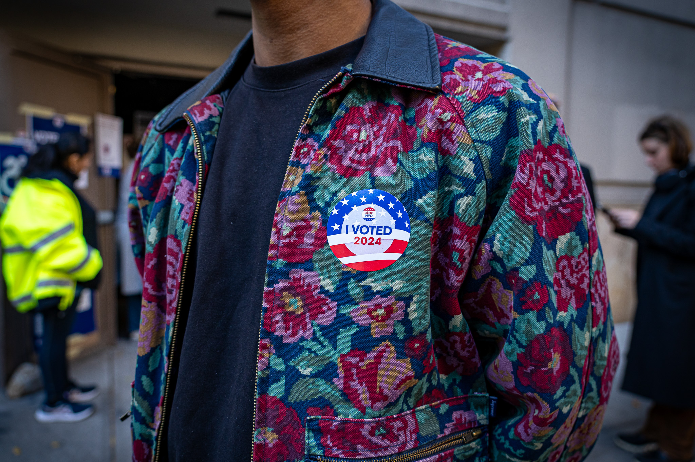
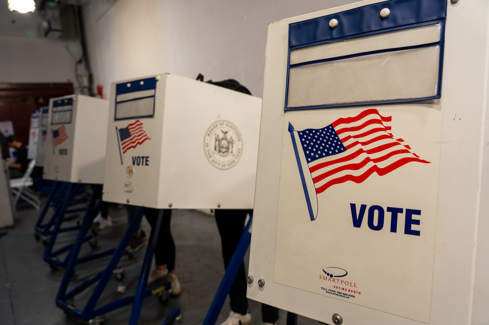
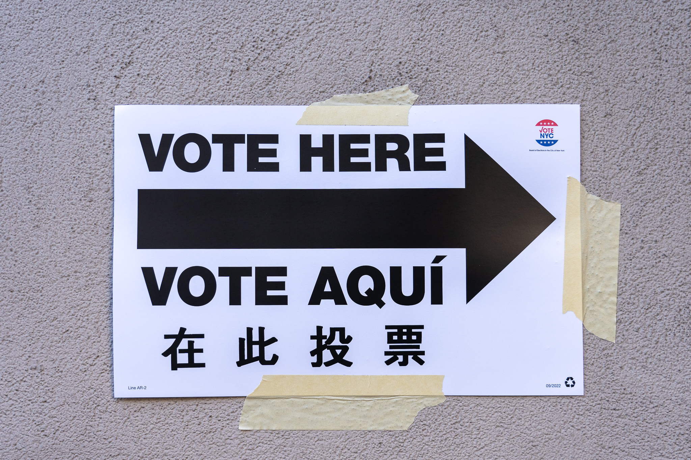

Election day in New York City carries a weight that you feel before you see it. The morning started early in the Bronx, where families lined up outside polling stations before the doors opened. There was no fanfare, just people showing up.

What struck me most was the quiet determination. Parents brought their children. Grandparents came with walkers. This was not performance. This was civic life as lived experience, passed down through generations in neighborhoods where every vote has always been a fight.

The younger voters wore their stickers like badges. There is something about the first time you vote that stays with you. I wanted to capture that pride without staging it. The best documentary photography happens when you wait.

Inside the polling stations, the atmosphere was almost meditative. Volunteers guided people through the process with patience. The machinery of democracy is mundane up close. Folding tables, paper ballots, privacy screens. But that mundanity is the point. It works because ordinary people make it work.

Moving to Manhattan in the afternoon, I found a different texture but the same story. Voting signage in a dozen languages. New York's diversity isn't an abstraction. It's printed on the signs outside every polling place, a reminder that democracy here means making room for everyone.
The machinery of democracy is mundane up close. But that mundanity is the point.
Covering elections as a photojournalist means resisting the urge to editorialize through your frame. The story is already there. Your job is to not get in the way.